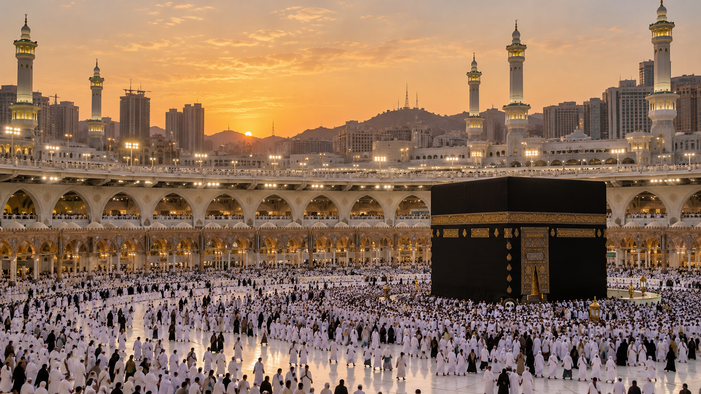
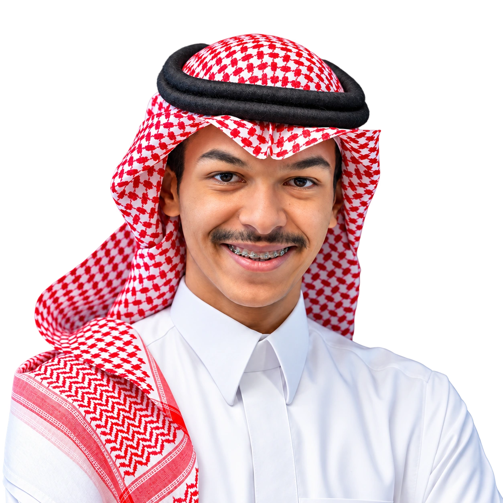
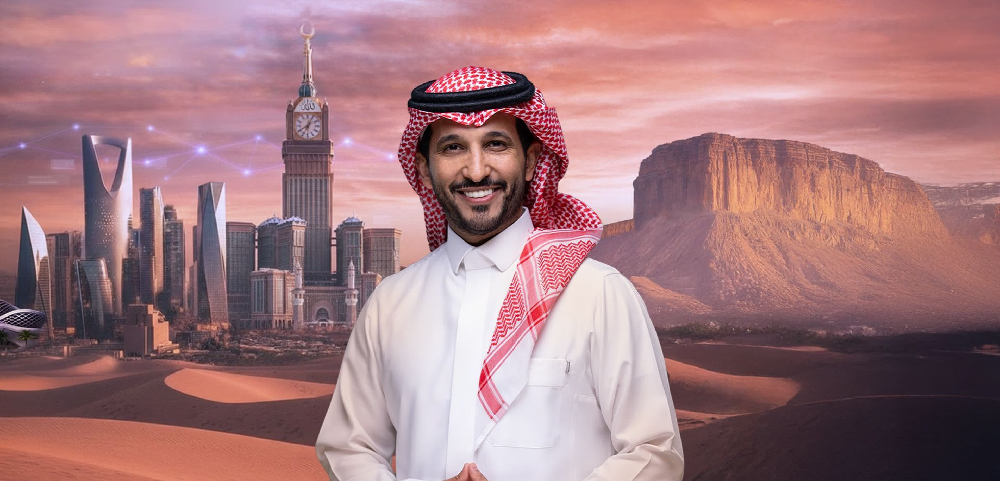
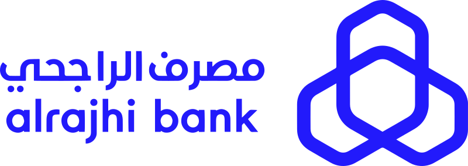
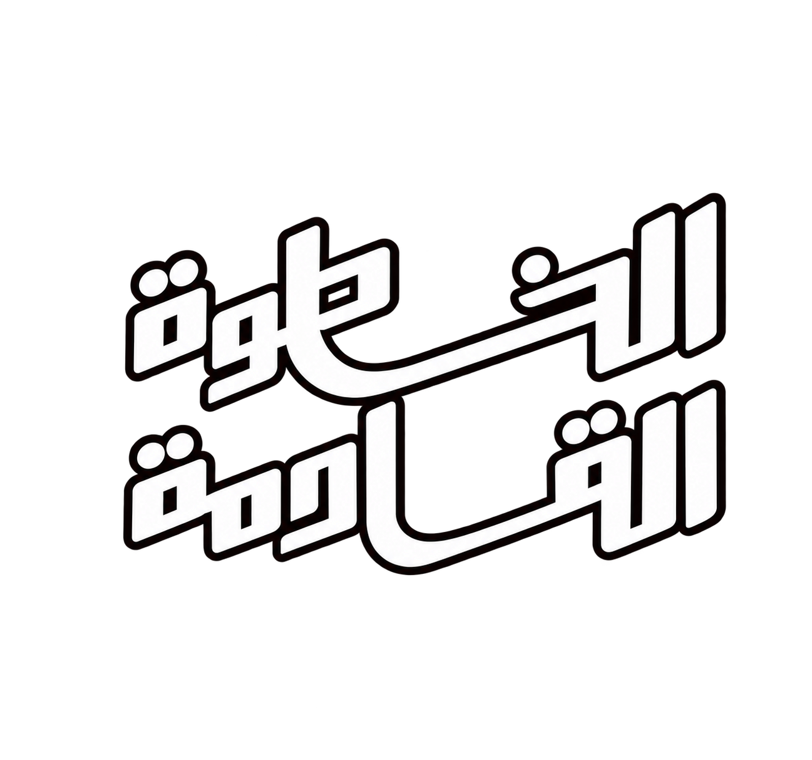
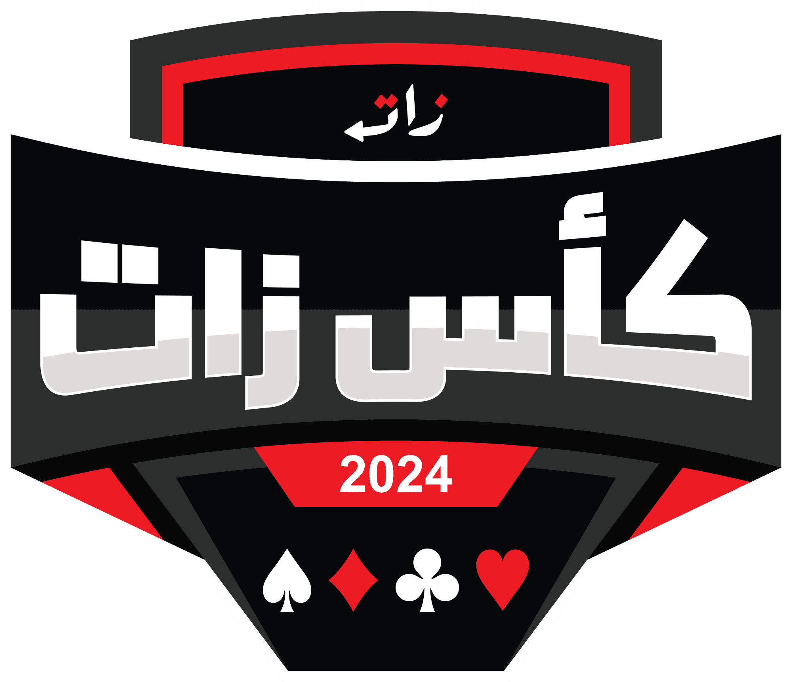

NABD AL-MASHAER01 — 07Nabd Al-Mashaer — Hajj Season 2026
2026PRODUCER
Field production for a health sector coverage project with NUPCO and the Ministry of Health.
VIEW PROJECT↗
I’m Faris — a media production specialist bringing creative ideas to life through thoughtful planning, hands-on production, and visual storytelling.

A selection of productions across public initiatives, entertainment, and commercial content.

NABD AL-MASHAER01 — 07Field production for a health sector coverage project with NUPCO and the Ministry of Health.

TUWAIQ · SEASON 402 — 07Production coordination, client communication, logistics, BTS photography, and media asset management across 30 documentary episodes.

Photography, production coordination, logistics, and project financial management.
Led production, logistics, and budget while creating photography and presenting interviews behind camera.

Supported production planning, client coordination, equipment management, writing, and episode tracking.

Supported tournament production and developed real-time statistics and reports for coverage.
Supported advertising production operations and managed the project budget.
Creative instincts, production discipline, and care for the details that make a shoot work.
I bring productions together —
from the first brief to final delivery.
My work sits at the intersection of media production, digital content, and photography. I build practical plans, bring the right people together, and keep the details moving on set.
I joined Nobtha through a co-op training program and continued as a full-time Media Production Specialist. Since then, I’ve worked across documentary, public sector, entertainment, and commercial projects.
Media Production Specialist · Full-time
Media Production & Coordination · Training
Content & Production Assistant · Training
Al-Imam Mohammad Ibn Saud Islamic University · 2022–2026
For production opportunities, collaborations, or just a good conversation about media.
Get in touch↗